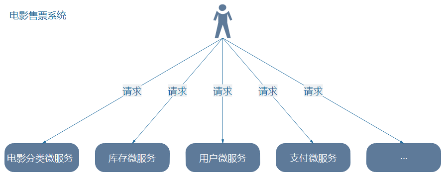
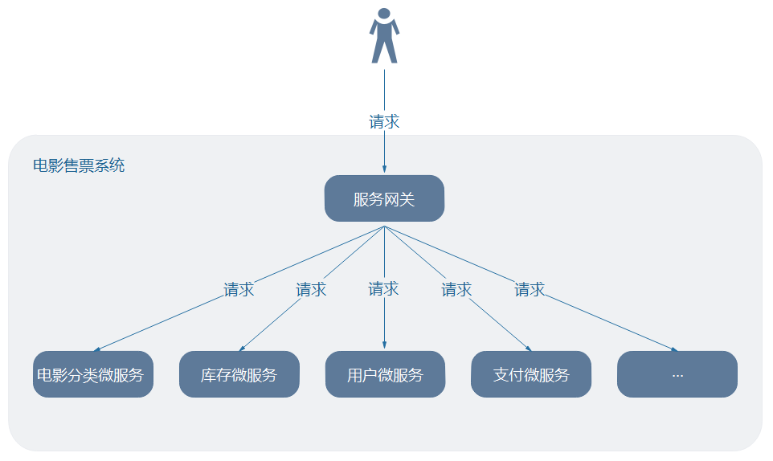
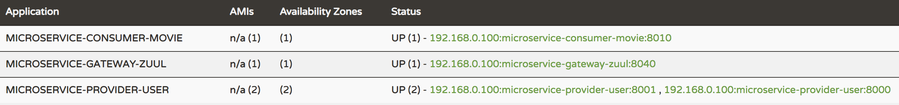

<!DOCTYPE HTML>
<html lang="zh-CN">
<head><meta name="generator" content="Hexo 3.8.0">
    <!--Setting-->
    <meta charset="UTF-8">
    <meta name="viewport" content="width=device-width, user-scalable=no, initial-scale=1.0, maximum-scale=1.0, minimum-scale=1.0">
    <meta http-equiv="X-UA-Compatible" content="IE=Edge,chrome=1">
    <meta http-equiv="Cache-Control" content="no-siteapp">
    <meta http-equiv="Cache-Control" content="no-transform">
    <meta http-equiv="pragma" content="no-cache">
    <meta http-equiv="Cache-Control" content="no-cache, must-revalidate">
    <meta http-equiv="expires" content="Mon Apr 06 2020 02:12:39 GMT+0800 (CST)">
    <meta name="renderer" content="webkit|ie-comp|ie-stand">
    <meta name="apple-mobile-web-app-capable" content="周立的博客 - 关注Spring Cloud、Docker">
    <meta name="apple-mobile-web-app-status-bar-style" content="black">
    <meta name="format-detection" content="telephone=no,email=no,adress=no">
    <meta name="browsermode" content="application">
    <meta name="screen-orientation" content="portrait">
    <meta name="theme-version" content="1.2.3">
    <meta name="root" content="/">
    
    <!--SEO-->

    <meta name="keywords" content="Spring Cloud,Zuul,API Gateway,网关">


    <meta name="description" content="至此，已实现基于Eureka的服务发现，基于Ribbon的负载均衡，Feign也为我们提供了很不错的远程调用能力，使用Hystrix后，高并发场景下应用也不会被别人拖死——咱们的微服务架构已经日趋完善！
然而，迄今为止，只讨论了微服务之间的调用，尚没讨论如何应对外部请求。应对外部请求时，就会发...">


<meta name="robots" content="all">
<meta name="google" content="all">
<meta name="googlebot" content="all">
<meta name="verify" content="all">
    <!--Title-->


<title>跟我学Spring Cloud（Finchley版）-16-Zuul | 周立的博客 - 关注Spring Cloud、Docker</title>


    <link rel="alternate" href="../../atom.html" title="周立的博客 - 关注Spring Cloud、Docker" type="application/atom+xml">


    

    


<link rel="stylesheet" href="../../static/css/bootstrap.min-271a649e0635d6fa1b.css">
<link rel="stylesheet" href="../../static/css/font-awesome.min-ac2bebcf7fb5b26.css">
<link rel="stylesheet" href="../../static/css/style-6f3c140f6eee20e6591da00ec0.css">


    


    <script>
        var _hmt = _hmt || [];
        (function() {
            var hm = document.createElement("script");
            hm.src = "https://hm.baidu.com/hm.js?13766878cde148282622871dd245a973";
            var s = document.getElementsByTagName("script")[0];
            s.parentNode.insertBefore(hm, s);
        })();
    </script>


    

</head>

</html>
<!--[if lte IE 8]>
<style>
    html{ font-size: 1em }
</style>
<![endif]-->
<!--[if lte IE 9]>
<div style="ie">你使用的浏览器版本过低，为了你更好的阅读体验，请更新浏览器的版本或者使用其他现代浏览器，比如Chrome、Firefox、Safari等。</div>
<![endif]-->

<body>
    
    <nav class="main-navigation">
    <div class="container">
        <div class="row clearfix">
            <div class="col-md-12 column">
                <nav class="navbar navbar-default" style="background-color:#fff;border:0;margin-bottom:0" role="navigation">
                    <div class="navbar-header">
                        <button type="button" class="navbar-toggle" data-toggle="collapse" data-target="#navbar-collapse-1">
                            <span class="sr-only">切</span>
                            <span class="icon-bar"></span>
                            <span class="icon-bar"></span>
                            <span class="icon-bar"></span>
                        </button>
                        <a class="logo" href="../../index.html">
                            周立的博客
                        </a>
                    </div>

                    <div class="collapse navbar-collapse" style="border:0;" id="navbar-collapse-1">
                        <ul class="nav navbar-nav">
                            
                                
                                    <li>
                                        <a href="../../about.html" target="_blank">
                                            <i class="fa fa-user"></i>
                                            关于我
                                        </a>
                                    </li>
                                
                            
                                
                                    <li>
                                        <a href="../../archives.html" target="_blank">
                                            <i class="fa fa-archive"></i>
                                            归档
                                        </a>
                                    </li>
                                
                            
                                
                                    <li class="dropdown">
                                        <a href="#" class="dropdown-toggle" data-toggle="dropdown" data-hover="dropdown">
                                            <i class="fa fa-fire"></i>
                                            系列课程
                                            <strong class="caret"></strong>
                                        </a>
                                        <ul class="dropdown-menu">
                                            
                                                <li>
                                                    <a href="../../docker/00-docker-lession-index.html" target="_blank">
                                                        <i class="fa "></i>
                                                        Docker系列教程
                                                    </a>
                                                </li>
                                            
                                                <li>
                                                    <a href="../spring-cloud-index.html" target="_blank">
                                                        <i class="fa "></i>
                                                        Spring Cloud系列教程
                                                    </a>
                                                </li>
                                            
                                                <li>
                                                    <a href="../../spring-boot/spring-boot-index.html" target="_blank">
                                                        <i class="fa "></i>
                                                        Spring Boot系列教程
                                                    </a>
                                                </li>
                                            
                                        </ul>
                                    </li>
                                
                            
                                
                                    <li class="dropdown">
                                        <a href="#" class="dropdown-toggle" data-toggle="dropdown" data-hover="dropdown">
                                            <i class="fa fa-book"></i>
                                            开源书
                                            <strong class="caret"></strong>
                                        </a>
                                        <ul class="dropdown-menu">
                                            
                                                <li>
                                                    <a href="../../books/rocketmq.html" target="_blank">
                                                        <i class="fa fa-rocket"></i>
                                                        RocketMQ开发者指南
                                                    </a>
                                                </li>
                                            
                                                <li>
                                                    <a href="../../books/skywalking.html" target="_blank">
                                                        <i class="fa fa-skyatlas"></i>
                                                        Skywalking 6.2.0中文文档
                                                    </a>
                                                </li>
                                            
                                        </ul>
                                    </li>
                                
                            
                                
                                    <li class="dropdown">
                                        <a href="#" class="dropdown-toggle" data-toggle="dropdown" data-hover="dropdown">
                                            <i class="fa fa-cog"></i>
                                            工具
                                            <strong class="caret"></strong>
                                        </a>
                                        <ul class="dropdown-menu">
                                            
                                                <li>
                                                    <a href="../../tools/markdown2.html" target="_blank">
                                                        <i class="fa "></i>
                                                        微信排版工具2.0
                                                    </a>
                                                </li>
                                            
                                        </ul>
                                    </li>
                                
                            
                        </ul>
                        
                            <form id="search-form" class="navbar-form navbar-right">
                                <div class="form-group input-group">
                                    <input type="text" id="local-search-input" class="form-control" placeholder="搜我...">
                                    <span class="input-group-btn">
                                        <a class="btn btn-default">
                                            <i class="fa fa-search"></i>
                                        </a>
                                    </span>
                                </div>
                                <div id="local-search-result" class="local-search-result-cls"></div>
                            </form>
                        
                    </div>
                </nav>
            </div>
        </div>
    </div>
</nav>

    <a href="javascript:;" target="_blank">
        
    </a>


    <section class="content-wrap">
        <div class="container">
            <div class="row">
                <main class="col-md-8 main-content m-post">
                    

<p id="process"></p>
<article class="post">
    <div class="post-head">
        <h1 id="跟我学Spring Cloud（Finchley版）-16-Zuul">
            
                跟我学Spring Cloud（Finchley版）-16-Zuul
            
        </h1>
        <div class="post-meta">
    
        <span class="categories-meta fa-wrap">
            <i class="fa fa-folder-open-o"></i>
            <a class="category-link" href="javascript:;">Spring Cloud</a>
        </span>
    

    
        <span class="fa-wrap">
            <i class="fa fa-tags"></i>
            <span class="tags-meta">
                
                    <a class="tag-link" href="javascript:;">API Gateway</a> <a class="tag-link" href="javascript:;">Spring Cloud</a> <a class="tag-link" href="javascript:;">Zuul</a> <a class="tag-link" href="../../tags/网关/index.html">网关</a>
                
            </span>
        </span>
    

    
        
        <span class="fa-wrap">
            <i class="fa fa-clock-o"></i>
            <span class="date-meta">2019/01/20</span>
        </span>
        
            <span class="fa-wrap">
                <i class="fa fa-eye"></i>
                <span id="busuanzi_value_page_pv"></span>
            </span>
        
    
</div>
        
        
    </div>
    
    <div class="post-body post-content" id="post-content">
        
    <div class="toc-article">
        <strong>
            目录
        </strong>
        <div class="toc-content">
            <ol class="toc"><li class="toc-item toc-level-2"><a class="toc-link" href="#为什么要使用网关"><span class="toc-text">为什么要使用网关</span></a></li><li class="toc-item toc-level-2"><a class="toc-link" href="#Zuul简介"><span class="toc-text">Zuul简介</span></a></li><li class="toc-item toc-level-2"><a class="toc-link" href="#入门"><span class="toc-text">入门</span></a><ol class="toc-child"><li class="toc-item toc-level-3"><a class="toc-link" href="#编码"><span class="toc-text">编码</span></a></li><li class="toc-item toc-level-3"><a class="toc-link" href="#测试"><span class="toc-text">测试</span></a><ol class="toc-child"><li class="toc-item toc-level-4"><a class="toc-link" href="#准备工作"><span class="toc-text">准备工作</span></a></li><li class="toc-item toc-level-4"><a class="toc-link" href="#反向代理测试"><span class="toc-text">反向代理测试</span></a></li><li class="toc-item toc-level-4"><a class="toc-link" href="#负载均衡测试"><span class="toc-text">负载均衡测试</span></a></li><li class="toc-item toc-level-4"><a class="toc-link" href="#断路器测试"><span class="toc-text">断路器测试</span></a></li></ol></li></ol></li><li class="toc-item toc-level-2"><a class="toc-link" href="#配套代码"><span class="toc-text">配套代码</span></a></li></ol>
        </div>
    </div>


        <p>至此，已实现基于Eureka的服务发现，基于Ribbon的负载均衡，Feign也为我们提供了很不错的远程调用能力，使用Hystrix后，高并发场景下应用也不会被别人拖死——咱们的微服务架构已经日趋完善！</p>
<p>然而，迄今为止，只讨论了微服务之间的调用，尚没讨论如何应对外部请求。应对外部请求时，就会发现，我们的架构依然存在一些问题——</p>
<h2 id="为什么要使用网关"><a href="#为什么要使用网关" class="headerlink" title="为什么要使用网关"></a>为什么要使用网关</h2><p>不同的微服务一般会有不同的网络地址，而外部客户端（例如手机APP）可能需要调用多个服务的接口才能完成一个业务需求。例如一个电影购票的手机APP，可能会调用多个微服务的接口，才能完成一次购票的业务流程，如下图所示。</p>
<p></p>
<p>如果让客户端直接与各个微服务通信，会有以下的问题：</p>
<ul>
<li>客户端会多次请求不同的微服务，增加了客户端的复杂性。</li>
<li>存在跨域请求，在一定场景下处理相对复杂。</li>
<li>认证复杂，每个服务都需要独立认证。</li>
<li>难以重构，随着项目的迭代，可能需要重新划分微服务。例如，可能将多个服务合并成一个或者将一个服务拆分成多个。如果客户端直接与微服务通信，那么重构将会很难实施。</li>
<li>某些微服务可能使用了防火墙/浏览器不友好的协议，直接访问会有一定的困难。</li>
</ul>
<p>以上问题可借助微服务网关解决。微服务网关是介于客户端和服务器端之间的中间层，所有的外部请求都会先经过微服务网关。使用微服务网关后，架构如下所示。</p>
<p></p>
<p>此时，微服务网关封装了应用程序的内部结构，客户端只须跟网关交互，而无须直接调用特定微服务的接口。这样，开发就可以得到简化。不仅如此，使用微服务网关还有以下优点：</p>
<ul>
<li>易于监控。可在微服务网关收集监控数据并将其推送到外部系统进行分析。</li>
<li>易于认证。可在微服务网关上进行认证，然后再将请求转发到后端的微服务，而无须在每个微服务中进行认证。</li>
<li>减少了客户端与各个微服务之间的交互次数。</li>
</ul>
<h2 id="Zuul简介"><a href="#Zuul简介" class="headerlink" title="Zuul简介"></a>Zuul简介</h2><p>Zuul是Netflix开源的微服务网关，它可以和Eureka、Ribbon、Hystrix等组件配合使用。Zuul的核心是一系列的过滤器，这些过滤器帮助我们完成以下功能：</p>
<ul>
<li>身份认证与安全：识别每个资源的验证要求，并拒绝那些与要求不符的请求；</li>
<li>审查与监控：在边缘位置追踪有意义的数据和统计结果，从而为我们带来精确的生产视图；</li>
<li>动态路由：动态地将请求路由到不同的后端集群；</li>
<li>压力测试：逐渐增加指向集群的流量，以了解性能；</li>
<li>负载分配：为每一种负载类型分配对应容量，并弃用超出限定值的请求；</li>
<li>静态响应处理：在边缘位置直接建立部分响应，从而避免其转发到内部集群；</li>
<li>多区域弹性：跨越AWS Region进行请求路由，旨在实现ELB（Elastic Load Balancing）使用的多样化；以及让系统的边缘更贴近系统的使用者。</li>
</ul>
<blockquote>
<p><strong>注1</strong>：以上介绍来自Zuul官方文档，但其实开源版本的Zuul以上功能一个都没有——开源的Zuul只是几个Jar包而已，以上能力指的应该是Netflix官方自用的Zuul的能力。</p>
<p><strong>注2</strong>：Netflix自用的Zuul能力是比较强大的，可使用Groovy编写过滤器，并且可动态加载/卸载、修改规则，而且使用Cassandra作为数据库，然而<strong>开源版本这些一个都没有</strong>。</p>
<p><strong>注3</strong>：Spring Cloud中，<strong>Zuul绝大部分功能都是Spring Cloud团队为Zuul开发的</strong>。</p>
<p><strong>注4</strong>：所以Zuul 2.x的开源进度延后一年，<strong>Spring Cloud团队开发了自己的Spring Cloud Gateway，并宣布Spring Cloud不打算支持Zuul 2.x，你还觉得意外吗？</strong></p>
<p><strong>注5</strong>：看到这里，很多人可能没有动力学习Zuul了，<strong>个人认为还是可以了解一下的</strong>，后面讲到Spring Cloud Gateway时，你会发现很多设计理念是相通的。</p>
</blockquote>
<p>Spring Cloud对Zuul进行了整合与增强。目前，Zuul使用的默认HTTP客户端是Apache HTTP Client，也可以使用RestClient或者<code>okhttp3.OkHttpClient</code> 。 如果想要使用RestClient，可以设置<code>ribbon.restclient.enabled=true</code> ；想要使用<code>okhttp3.OkHttpClient</code> ，可以设置<code>ribbon.okhttp.enabled=true</code> 。</p>
<p><strong>TIPS</strong></p>
<p>Zuul的GitHub：<a href="javascript:;" target="_blank" rel="noopener">https://github.com/Netflix/zuul</a></p>
<h2 id="入门"><a href="#入门" class="headerlink" title="入门"></a>入门</h2><p>下面通过一个简单的例子帮助大家快速入门Zuul。</p>
<h3 id="编码"><a href="#编码" class="headerlink" title="编码"></a>编码</h3><ul>
<li><p>加依赖</p>
<figure class="highlight xml"><table><tr><td class="gutter"><pre><span class="line">1</span><br><span class="line">2</span><br><span class="line">3</span><br><span class="line">4</span><br><span class="line">5</span><br><span class="line">6</span><br><span class="line">7</span><br><span class="line">8</span><br></pre></td><td class="code"><pre><span class="line"><span class="tag">&lt;<span class="name">dependency</span>&gt;</span></span><br><span class="line">  <span class="tag">&lt;<span class="name">groupId</span>&gt;</span>org.springframework.cloud<span class="tag">&lt;/<span class="name">groupId</span>&gt;</span></span><br><span class="line">  <span class="tag">&lt;<span class="name">artifactId</span>&gt;</span>spring-cloud-starter-netflix-zuul<span class="tag">&lt;/<span class="name">artifactId</span>&gt;</span></span><br><span class="line"><span class="tag">&lt;/<span class="name">dependency</span>&gt;</span></span><br><span class="line"><span class="tag">&lt;<span class="name">dependency</span>&gt;</span></span><br><span class="line">  <span class="tag">&lt;<span class="name">groupId</span>&gt;</span>org.springframework.cloud<span class="tag">&lt;/<span class="name">groupId</span>&gt;</span></span><br><span class="line">  <span class="tag">&lt;<span class="name">artifactId</span>&gt;</span>spring-cloud-starter-netflix-eureka-client<span class="tag">&lt;/<span class="name">artifactId</span>&gt;</span></span><br><span class="line"><span class="tag">&lt;/<span class="name">dependency</span>&gt;</span></span><br></pre></td></tr></table></figure>
</li>
<li><p>加注解：<code>@EnableZuulProxy</code></p>
</li>
<li><p>写配置：</p>
<figure class="highlight yaml"><table><tr><td class="gutter"><pre><span class="line">1</span><br><span class="line">2</span><br><span class="line">3</span><br><span class="line">4</span><br><span class="line">5</span><br><span class="line">6</span><br><span class="line">7</span><br><span class="line">8</span><br><span class="line">9</span><br></pre></td><td class="code"><pre><span class="line"><span class="attr">server:</span></span><br><span class="line"><span class="attr">  port:</span> <span class="number">8040</span></span><br><span class="line"><span class="attr">spring:</span></span><br><span class="line"><span class="attr">  application:</span></span><br><span class="line"><span class="attr">    name:</span> <span class="string">microservice-gateway-zuul</span></span><br><span class="line"><span class="attr">eureka:</span></span><br><span class="line"><span class="attr">  client:</span></span><br><span class="line"><span class="attr">    service-url:</span></span><br><span class="line"><span class="attr">      defaultZone:</span> <span class="attr">http://localhost:8761/eureka/</span></span><br></pre></td></tr></table></figure>
</li>
</ul>
<p>由代码可知，我们编写了一个Zuul，并将其注册到了Eureka上。</p>
<h3 id="测试"><a href="#测试" class="headerlink" title="测试"></a>测试</h3><h4 id="准备工作"><a href="#准备工作" class="headerlink" title="准备工作"></a>准备工作</h4><p>启动多个应用，Eureka Server上展示如下：</p>
<p></p>
<h4 id="反向代理测试"><a href="#反向代理测试" class="headerlink" title="反向代理测试"></a>反向代理测试</h4><ul>
<li>访问<code>http://127.0.0.1:8040/microservice-provider-user/users/1</code> ，会发现请求被转发到了<code>microservice-provider-user</code> 服务的<code>/users/1</code> 端点；</li>
<li>访问<code>http://127.0.0.1:8040/microservice-consumer-movie/movies/users/1</code> ，发现请求被转发到了<code>microservice-consumer-movie</code> 服务的<code>/movies/users/1</code> 端点；</li>
</ul>
<h4 id="负载均衡测试"><a href="#负载均衡测试" class="headerlink" title="负载均衡测试"></a>负载均衡测试</h4><p>多次访问访问<code>http://127.0.0.1:8040/microservice-provider-user/users/1</code> ，会发现两个<code>microservice-provider-user</code> 都会打印类似如下的日志：</p>
<figure class="highlight plain"><table><tr><td class="gutter"><pre><span class="line">1</span><br><span class="line">2</span><br></pre></td><td class="code"><pre><span class="line">Hibernate: select user0_.id as id1_0_0_, user0_.age as age2_0_0_, user0_.balance as balance3_0_0_, user0_.name as name4_0_0_, user0_.username as username5_0_0_ from user user0_ where user0_.id=?</span><br><span class="line">...</span><br></pre></td></tr></table></figure>
<h4 id="断路器测试"><a href="#断路器测试" class="headerlink" title="断路器测试"></a>断路器测试</h4><p>在<code>application.yml</code> 中添加如下配置后，并重启Zuul：</p>
<figure class="highlight yaml"><table><tr><td class="gutter"><pre><span class="line">1</span><br><span class="line">2</span><br><span class="line">3</span><br><span class="line">4</span><br><span class="line">5</span><br><span class="line">6</span><br><span class="line">7</span><br><span class="line">8</span><br></pre></td><td class="code"><pre><span class="line"><span class="attr">management:</span></span><br><span class="line"><span class="attr">  endpoints:</span></span><br><span class="line"><span class="attr">    web:</span></span><br><span class="line"><span class="attr">      exposure:</span></span><br><span class="line"><span class="attr">        include:</span> <span class="string">'*'</span></span><br><span class="line"><span class="attr">  endpoint:</span></span><br><span class="line"><span class="attr">    health:</span></span><br><span class="line"><span class="attr">      show-details:</span> <span class="string">always</span></span><br></pre></td></tr></table></figure>
<p>此时，此时访问<code>http://localhost:8040/actuator/health</code> ，可看到类似如下结果：</p>
<figure class="highlight"><table><tr><td class="gutter"><pre><span class="line">1</span><br><span class="line">2</span><br><span class="line">3</span><br><span class="line">4</span><br></pre></td><td class="code"><pre><span class="line">&#123;</span><br><span class="line">  ...</span><br><span class="line">  "hystrix":&#123;"status":"UP"&#125;</span><br><span class="line">&#125;</span><br></pre></td></tr></table></figure>
<p>并且，当Zuul转发API后，访问<code>http://localhost:8040/actuator/hystrix.stream</code>  可看到类似如下的信息：</p>
<figure class="highlight"><table><tr><td class="gutter"><pre><span class="line">1</span><br></pre></td><td class="code"><pre><span class="line">data: &#123;"type":"HystrixCommand","name":"microservice-provider-user",.....&#125;</span><br></pre></td></tr></table></figure>
<p>说明Zuul整合了Hystrix。</p>
<h2 id="配套代码"><a href="#配套代码" class="headerlink" title="配套代码"></a>配套代码</h2><ul>
<li>GitHub：<a href="javascript:;" target="_blank" rel="noopener">https://github.com/eacdy/spring-cloud-study/tree/master/2018-Finchley/microservice-gateway-zuul</a></li>
<li>Gitee：<a href="javascript:;" target="_blank" rel="noopener">https://gitee.com/itmuch/spring-cloud-study/tree/master/2018-Finchley/microservice-gateway-zuul</a></li>
</ul>

        <h2>相关文章</h2><ul><li><a href="../finchley-17/index.html">跟我学Spring Cloud（Finchley版）-17-Zuul路由配置详解</a></li><li><a href="../finchley-18/index.html">跟我学Spring Cloud（Finchley版）-18-Zuul深入</a></li><li><a href="../zuul/spring-cloud-zuul-filter/index.html">Spring Cloud Zuul过滤器详解</a></li><li><a href="../edgware-zuul-filters-endpoint/index.html">Spring Cloud Edgware新特性之五：filters端点</a></li><li><a href="../../spring-cloud-sum/debug-zuul/index.html">实用技巧：快速定位Zuul的性能瓶颈</a></li></ul>
    </div>
    
    <div class="post-footer">
        <div class="col-sm-10">
            <div>
                <b>本文链接</b>：<a href="" target="_blank">跟我学Spring Cloud（Finchley版）-16-Zuul</a>
            </div>
            <div>
                
                    转载声明：本博客由周立创作，采用 <a href="javascript:;" target="_blank"> CC BY 3.0 CN </a> 许可协议。可自由转载、引用，但需署名作者且注明文章出处。如转载至微信公众号，请在文末添加作者公众号二维码。
                
            </div>
            <div>
                
            </div>
        </div>
        <div class="col-sm-2">
            
        </div>
    </div>
</article>

<div class="article-nav prev-next-wrap clearfix">
    
        <a target="_blank" href="../../spring-cloud-alibaba-migration/spring-cloud-alibaba-1/index.html" class="pre-post btn btn-default" title="Spring Cloud Alibaba迁移指南1：零代码从Eureka迁移到Nacos">
            <i class="fa fa-angle-left fa-fw"></i><span class="hidden-lg">上一篇</span>
            <span class="hidden-xs">Spring Cloud Alibaba迁移指南1：零代码从Eureka迁移到Nacos</span>
        </a>
    
    
        <a target="_blank" href="../finchley-15/index.html" class="next-post btn btn-default" title="跟我学Spring Cloud（Finchley版）-15-Hystrix监控详解">
            <span class="hidden-lg">下一篇</span>
            <span class="hidden-xs">跟我学Spring Cloud（Finchley版）-15-Hystrix监控详解</span><i class="fa fa-angle-right fa-fw"></i>
        </a>
    
</div>


    <div id="comments">
        
   <p>评论系统未开启，无法评论！</p>

    </div>


                </main>
                
    <aside class="col-md-4 sidebar">
        
        <div class="widget about-me">
    <div class="row">
        <div class="col-md-5">
            
        </div>
        <div class="col-md-7">
            <a class="series-a" href="javascript:void(0)">公众号</a>
            <ul>
                <li>• 技术干货推送</li>
                <li>• 免费资料领取</li>
                <li><b>• 扫码领取更多惊喜</b></li>
            </ul>
        </div>
    </div>
    
        <div class="row">
            <div class="col-md-5">
                
            </div>
            <div class="col-md-7">
                <a class="series-a" href="javascript:void(0)">小程序</a>
                <ul>
                    <li>• 原创笔记</li>
                    <li>• 独家心法</li>
                    <li><b>• 扫码领取</b></li>
                </ul>
            </div>
        </div>
    
</div>


        
        
    <div class="ad">
        <div class="row">
            <div class="col-md-12">
                <a href="javascript:;" rel="nofollow" target="_blank">
                    
                </a>
            </div>
        </div>
    </div>


        
        <div class="widget">
    <div class="row">
        <div class="col-md-3">
            
        </div>
        <div class="col-md-9">
            <a class="series-a" target="_blank" href="../spring-cloud-index.html">Spring Cloud系列教程</a>
            <p>全面、通俗易懂的Spring Cloud教程</p>
        </div>
    </div>
    <div class="row">
        <div class="col-md-3">
            
        </div>
        <div class="col-md-9">
            <a class="series-a" target="_blank" href="javascript:;">Spring Cloud Alibaba视频教程</a>
            <p>全网唯一，你值得拥有</p>
        </div>
    </div>
    <div class="row">
        <div class="col-md-3">
            
        </div>
        <div class="col-md-9">
            <a class="series-a" target="_blank" href="../../docker/00-docker-lession-index.html">Docker系列教程</a>
            <p>Docker系列</p>
        </div>
    </div>
    <div class="row">
        <div class="col-md-3">
            
        </div>
        <div class="col-md-9">
            <a class="series-a" target="_blank" href="../../spring-boot/spring-boot-index.html">Spring Boot系列教程</a>
            <p>Boot是基石...</p>
        </div>
    </div>
</div>


        
        
    <div class="widget">
        <h3 class="title">分类</h3>
        <ul class="category-list"><li class="category-list-item"><a class="category-list-link" href="javascript:;"><i class="fa" aria-hidden="true">Docker</i></a><span class="category-list-count">31</span></li><li class="category-list-item"><a class="category-list-link" href="javascript:;"><i class="fa" aria-hidden="true">Kubernetes</i></a><span class="category-list-count">2</span></li><li class="category-list-item"><a class="category-list-link" href="javascript:;"><i class="fa" aria-hidden="true">Spring Boot</i></a><span class="category-list-count">6</span></li><li class="category-list-item"><a class="category-list-link current" href="javascript:;"><i class="fa" aria-hidden="true">Spring Cloud</i></a><span class="category-list-count">94</span></li><li class="category-list-item"><a class="category-list-link" href="javascript:;"><i class="fa" aria-hidden="true">Spring Cloud Alibaba</i></a><span class="category-list-count">16</span></li><li class="category-list-item"><a class="category-list-link" href="javascript:;"><i class="fa" aria-hidden="true">Spring Cloud Stream</i></a><span class="category-list-count">1</span></li><li class="category-list-item"><a class="category-list-link" href="../../categories/其他/index.html"><i class="fa" aria-hidden="true">其他</i></a><span class="category-list-count">13</span></li><li class="category-list-item"><a class="category-list-link" href="../../categories/安装教程/index.html"><i class="fa" aria-hidden="true">安装教程</i></a><span class="category-list-count">7</span></li><li class="category-list-item"><a class="category-list-link" href="../../categories/工作/index.html"><i class="fa" aria-hidden="true">工作</i></a><span class="category-list-count">20</span></li></ul>
    </div>


        
        
        
        

        
    </aside>

            </div>
        </div>
    </section>
    <footer class="main-footer">
    <div class="container">
        <div class="row">
        </div>
    </div>
</footer>

<a id="back-to-top" class="icon-btn hide">
	<i class="fa fa-chevron-up"></i>
</a>


    <div class="copyright">
    <div class="container">
        <div class="row">
            <div class="col-sm-12">
                <div class="busuanzi">
    
        访问量:
        <strong id="busuanzi_value_site_pv">
            <i class="fa fa-spinner fa-spin"></i>
        </strong>
        &nbsp; | &nbsp;
        访客数:
        <strong id="busuanzi_value_site_uv">
            <i class="fa fa-spinner fa-spin"></i>
        </strong>
        &nbsp; <strong>Since 2018-12-26</strong>
    
</div>

            </div>
            <div class="col-sm-12">
                <span>Copyright &copy; 2017
                </span> |
                <span>
                    Powered by <a href="javascript:;" class="copyright-links" target="_blank" rel="nofollow">Hexo</a>
                </span> |
                <span>
                    Theme by <a href="javascript:;" class="copyright-links" target="_blank" rel="nofollow">ITMuch</a>
                </span>
            </div>
        </div>
    </div>
</div>

<script src="../../static/js/jquery.min.js"></script>
<script src="../../static/js/bootstrap.min.js"></script>
<script src="../../static/js/bootstrap-hover-dropdown.min.js"></script>

    <script src="../../static/js/search-3f4fbd0557c869ca0516ebb5f.js"></script>


    <script async="" src="../../static/js/busuanzi.pure.mini.js"></script>


<script src="../../static/js/app-da10bb3b2ae5c8348d2bd2cc3faf.js"></script>


</body>
